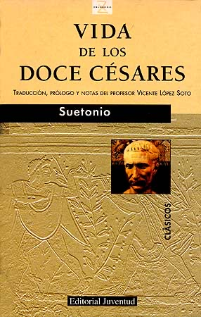

Vida de los doce cesares
Reseña por Jorge I. Zuluaga

Ver detalles · Ver reseña en GoodReads (necesita cuenta)
Leí la "Vida de los doce césares" espoleado por el (más bien decepcionante) libro de Mary Beard Doce Césares (mi reseña aquí), en el que esperaba encontrar justamente, y en un lenguaje más moderno, las respuestas a las preguntas que las historias de Suetonio responden en este libro: ¿quiénes fueron realmente los doce (u once) primeros emperadores de Roma? ¿Cuál fue su origen? ¿Cuáles las circunstancias exactas de su (violenta) sucesión? ¿Cuáles fueron sus obras? ¿Quiénes sus (múltiples) esposas y sus hijos? ¿Cómo eran físicamente? (¡Sí! ¡Hasta eso!). ¿Fueron todos en realidad tan malos como nos lo han transmitido los mitos de la cultura popular (el cine y la TV)?.
Este es mi primer texto clásico de un autor romano (de los muchos que se están empezando a ver con regularidad en librerías). Me ha complacido mucho encontrar en él muchas referencias directas a la cultura de su tiempo, la organización del Estado, los cargos, la moneda, los asuntos civiles, etc., cosas que había encontrado en abundancia en las novelas históricas de Posteguillo (que fueron realmente las que me iniciaron en la historia de Roma). Al leer a Suetonio, aprecio mucho más la precisión histórica de un autor como él.
La estructura del texto es bastante predecible. El texto moderno viene dividido en "libros", 12 para ser exactos, uno por cada césar. Mencioné antes que eran 11 emperadores, porque "Vida de los doce césares" incluye un libro sobre la vida de Julio César, el original, que fue, como sabemos, dictador, más no emperador (o princeps, augusto, Padre de la Patria, que serían términos más precisos para describir la condición de los gobernantes del Estado romano comenzando por Octavio y hasta Domiciano, al menos en la lista de este texto). Cada libro viene dividido en cuartillas identificadas con números romanos. Esa estructura hace que la lectura del libro rinda.
El libro realmente no es fácil de leer.
La traducción, que imagino se hizo lo más fiel posible al original en latín, tiene una redacción más bien anacrónica que hace que algunos párrafos haya que leerlos dos o tres veces para comprender cabalmente lo que se está contando. A eso se suma que muchos detalles son realmente carentes de interés (tratan sobre la familia o sobre los asuntos del Estado que, al menos para un lector casual, son excesivamente detallados).
Aun con esas dificultades, que son apenas naturales en la lectura de un texto escrito hace no más de 1900 años, a las historias de los césares de Suetonio no les falta picante y mucha "acción". Sus descripciones físicas son geniales y nos ayudan a acercarnos a personajes de carne y hueso (más allá de lo que muestran sus caras de perfil en monedas, las únicas evidencias gráficas seguras de su apariencia) que dejaron una huella tan honda en la historia de Occidente.
Al leer las vidas de Suetonio, se caen también algunos mitos sobre los césares que han sido una y otra vez reforzados por la cultura popular. Aunque, claro, no hay que tomarse, como nos advierten los académicos, todo lo que escribe el historiador romano al pie de la letra.
Julio César, además del caudillo admirable y reformador imparable, también era extremadamente arrogante; decía sin sonrojarse: "Los hombres deberían hablar conmigo con más respeto y tener como ley lo que yo diga"; también era un convencido de la tiranía como única forma de gobierno y decía: "La república no es más que una palabra sin cuerpo ni realidad" o bien: "Sila se portó como un escolar ya que abandonó la tiranía".
Octavio "Augusto" fue el primer emperador y el mejor, sin duda alguna. La institución del principado nació y murió (virtualmente) con él. También era un santurrón conservador indomable, que modificó las leyes sobre el matrimonio para que el mayor número de romanos mantuviera su castidad y las buenas costumbres de una sociedad bastante acostumbrada al vicio y el sexo.
Tiberio (o Biberio, como lo llamaban sus colegas militares), a pesar de sus perversiones y su terrible y cruel gobierno, fue al principio un emperador competente, relativamente humilde y justo. En el inicio de su cursus honorum fue también un líder militar distinguido.
Calígula (o en español "botitas") siempre odió ese maldito apodo. En la obra de Suetonio, como lo sería en la corte, es llamado insistentemente por su verdadero nombre, Cayo César. Se recuerda por haber construido un enorme puente de casi 3 km, uniendo barcos sobre la bahía de Bayas, al sur de Roma, y que atravesaba a veces a caballo, a veces sobre una cuadriga. Se dice que lo construyó solo para contradecir lo que el astrólogo de su tío abuelo Tiberio había predicho: "Cayo tendría más posibilidad de ser emperador que atravesar a caballo la bahía de Bayas".
Claudio fue un buen emperador (y uno de los pocos en ser divinizado). Su mamá decía de él que era una "caricatura de hombre, no un ser acabado por naturaleza, sino tan solo un aborto" (¡hágame el favor!). Sin embargo, sus contemporáneos decían que las decisiones las tomaba movido por la opinión de los libertos (personas que habían sido esclavas y que después obtuvieron la libertad) y de las mujeres de su vida. Por ser considerado medio incompetente para ocupar cargos públicos, se dedicó a las artes liberales, escribió libros de historia, incluso sobre la lengua latina, para la que inventó tres letras nuevas (que no se conservaron).
De Nerón no hay mucho que desmitificar: fue tan terrible como se lo pinta tradicionalmente. Tal vez lo que más me llamó la atención (aunque es un hecho relativamente conocido) fue su competencia como cantante e intérprete de la cítara y su participación como un concursante más (a pesar de su poder) en festivales organizados en Roma. Y si no hubiera sido un emperador tan odiado, tal vez habríamos llamado al mes de abril, Neroniano, o a Roma, Nerópolis.
A Galba, Otón y Vitelio los conocí mejor en la trilogía de Trajano de Santiago Posteguillo. Los convulsos meses de gobierno de estos extraños personajes, los emperadores de aquellos años menos conocidos, fueron brillantemente descritos en "Los asesinos del emperador", la primera novela de esa grandiosa trilogía. Una cosa parecida me ocurrió con los flavios: Vespasiano, Tito y Domiciano.
Leer un clásico de la historia siempre será un logro para cualquier aficionado como yo. Este no es un libro para todos (incluso no lo es del todo para mí; hice un gran esfuerzo para leerlo). De allí que solo le dé 3 estrellas.